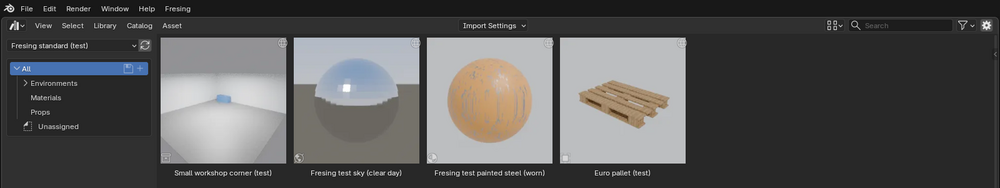
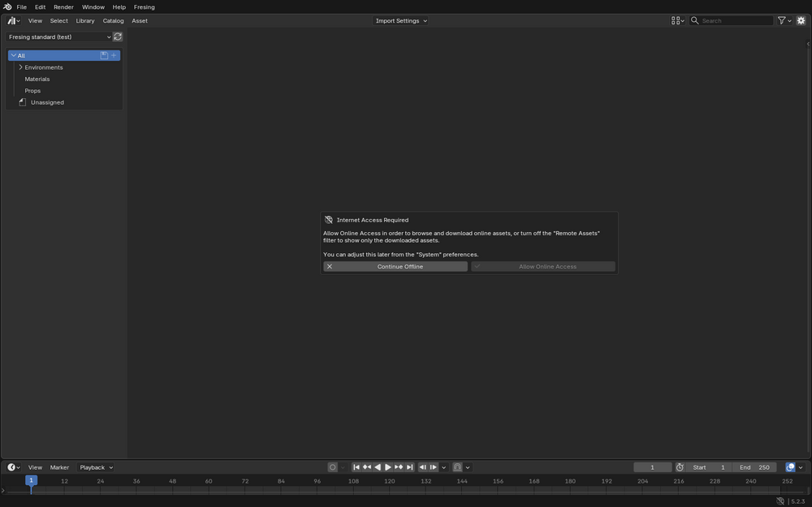
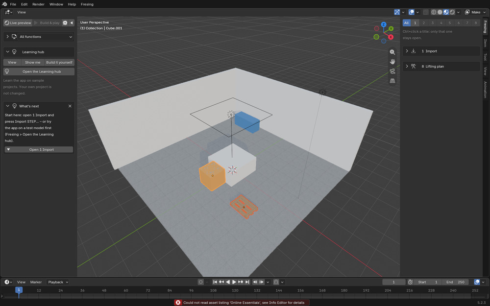
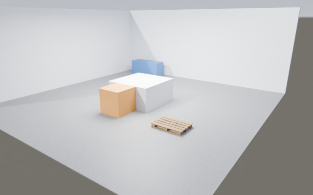
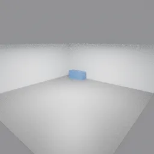
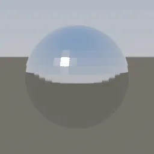
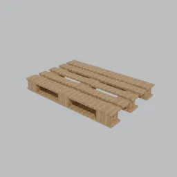
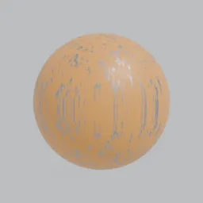

0286 – Asset libraries: Fresing standard, online libraries, your own
A study with a working proof on its own branch – nothing is in the app yet. Everything was tried on the 4-core web test machine (Linux, Blender 5.2.3, no graphics card) with 4 test assets this study drew itself (CC0) – nothing downloaded from anyone, nothing of yours. Licence facts: see section 4; most provider web sites were blocked from the test machine, so some quotes are search-engine excerpts (marked) that you or a lead should check in a browser.
- Fresing standard = a Blender 5.2 "remote asset library" hosted by us as plain files (a new public repository with GitHub Pages; big 360° photos as release files). Blender already has everything: the listing tool, the download, the cache, offline use. The proof works end to end inside the Fresing app (below). Only CC0 assets, made by us or taken from CC0 sources.
- Online: Poly Haven and ambientCG (both CC0) – the app downloads from them itself; Poly Haven asks for our program name in each request and its name visible in the picker. Blendkit only through its own add-on: a "Get Blendkit" button, the user signs in himself; their Royalty-Free models may not go into a public Web 3D page or a Viewer file without asking them (draft e-mail in the report).
- Yours: "Keep" copies a downloaded asset into Mine / Department / Company (task 0272's folders) with a small
asset.jsonbeside it (where from, licence, may it travel) – so it works offline and a company sees what came from where. - One picker window – 0273's material window grows tabs for Environments, 360° photos and Props, with the Source filter Fresing · Online · Company · Department · Mine (layout 1 below).
- Before anything leaves the PC (send project, Web 3D page, Viewer file) the app lists assets that may not be passed on.
1 · The proof: our own library inside the Fresing app
4 assets (1.3 MB) → Blender's own listing tool (0.1 s) → a local web server → added as a remote library in the Fresing app → listing and pictures in 1.5 s, all 4 assets downloaded in 0.5 s → placed: the pallet at exactly 1.2 × 0.8 × 0.144 m, the sky as the world, the paint on a block, the workshop corner around it → a project saved with the assets inside (1.1 MB) → closed, started again offline: library and downloads still there.




2 · Picker layouts
Drawn with the four test pictures. Badges: green = Fresing · purple = Poly Haven · orange = ambientCG · blue = Blendkit · grey = Company / Mine; top right the licence.
Layout 1 ★ – one window, kinds as tabs, sources on the left (0273's window, grown)
☑ Fresing
☑ Online
☑ Poly Haven
☑ ambientCG
☐ Blendkit Get…
☑ Company
☑ Offshore dept.
☑ Mine
Show
◉ All ○ On this PC
Kind
Hall · Outdoor · Studio · Sea

FresingCC0
Poly HavenCC0
Companyown
BlendkitRFFresing · CC0 · 10 × 10 × 4 m
May travel: yes
On this PC: no (0.2 MB)
Use Keep…
One window for everything (draggable, stays open – like 0271 / 0282's windows). "⤓" = not on this PC yet: Use downloads it first. "Keep…" asks Mine / Department / Company (the writable ones). The Material tab is 0273's window as built; the other tabs reuse it. A company set-up can switch the Online group off.
Layout 2 – sources as tabs on top, kinds on the left
▸ Environments
▸ 360° photos
▸ Materials
▸ Props
Simple, but a search never covers all sources at once, and it differs from 0273's Source filter.
Layout 3 – a picture strip in the panels, "More…" opens the window
Not instead of the window: the way the window joins today's Surroundings, Props and the group box of 3 Looks (0273's short list works the same). Recommended together with layout 1.
3 · What should be in Fresing standard first
The app already builds its halls, sea, quay, deck and 7 props itself (they stay – no download, any size). The library adds what is missing. "Made" = drawn by us (code or Blender), "CC0" = picked from Poly Haven / ambientCG and re-hosted (allowed, see 4). Sizes are estimates for a 2k picture packed in its .blend.
| # | Kind | Asset | From | ≈ size | For |
|---|---|---|---|---|---|
| 1 | 360° photo | Soft studio (light boxes) | CC0 | 10 MB | product shots, 0233 studio set |
| 2 | 360° photo | Overcast sky, open ground | CC0 | 8 MB | outdoor, cranes |
| 3 | 360° photo | Clear sky with sun | CC0 | 8 MB | outdoor |
| 4 | 360° photo | Industrial hall inside | CC0 | 10 MB | machines on the floor |
| 5 | 360° photo | Harbour / port | CC0 | 10 MB | offshore equipment on the quay |
| 6 | Environment | Studio cove (white / grey infinity curve) | Made | 0.5 MB | product renders |
| 7 | Environment | Small workshop with benches | Made | 3 MB | CNC mill set (0233) |
| 8 | Environment | Outdoor yard (asphalt, fence, containers) | Made + CC0 materials | 8 MB | cranes, lifting plans |
| 9 | Environment | Showroom / trade-fair stand | Made | 3 MB | sales pictures |
| 10 | Materials | Floors: concrete, epoxy, checker plate, asphalt, gravel, grass | CC0 | 6 × 4 MB | under every machine |
| 11 | Materials | Walls: brick, corrugated sheet, painted block | CC0 | 3 × 4 MB | halls |
| 12 | Props | Pallet rack, workbench, oil drum, traffic cone, fire extinguisher, ladder, toolbox | Made (as props_detail.py) | < 1 MB each | scale (0258) |
Starter set in the installer (works offline, no internet ever): 6, 7, 1 and two floors ≈ 30 MB. Everything else on demand. All at real size, checked by the library's own test (0258's rule).
4 · What the sources allow (short)
| Source | Re-host in Fresing standard / installer | App downloads itself | Needs their add-on / account | In a project sent to a client | In a public Web 3D page / Viewer file | Credit |
|---|---|---|---|---|---|---|
| Fresing standard (ours, CC0) | yes | yes | no | yes | yes | no |
| Poly Haven (CC0) | yes | yes, also commercial since 18 Jul 2026 – our program name in each request, "Poly Haven" visible in the picker | no (their add-on is paid and not needed) | yes | yes | for the live API only, not the assets |
| ambientCG (CC0) | yes | yes – no API terms found, ask them | no | yes | yes | appreciated |
| Blendkit (Royalty Free + CC0) | no (RF) | no – no public API terms; only with their written OK | yes: their add-on; free assets without an account; Full plan $9.90 / month / seat | probably yes "as part of the project" (search excerpt) | unclear – ask first, warn meanwhile | no |
| Blender Essentials (CC0, in Blender) | yes | Blender does it | no | yes | yes | no |
| Sketchfab | no | only with the user signed in inside the app | yes | per model (CC-BY etc.) | per model, credit must follow | often |
| Fab / Megascans | no | no API found | Epic account | as part of a project | no standalone | – |
Quotes and links for every cell: the report in tasks/0286-study-online-asset-libraries.md and
tasks/0286_page/sources_licences.md.